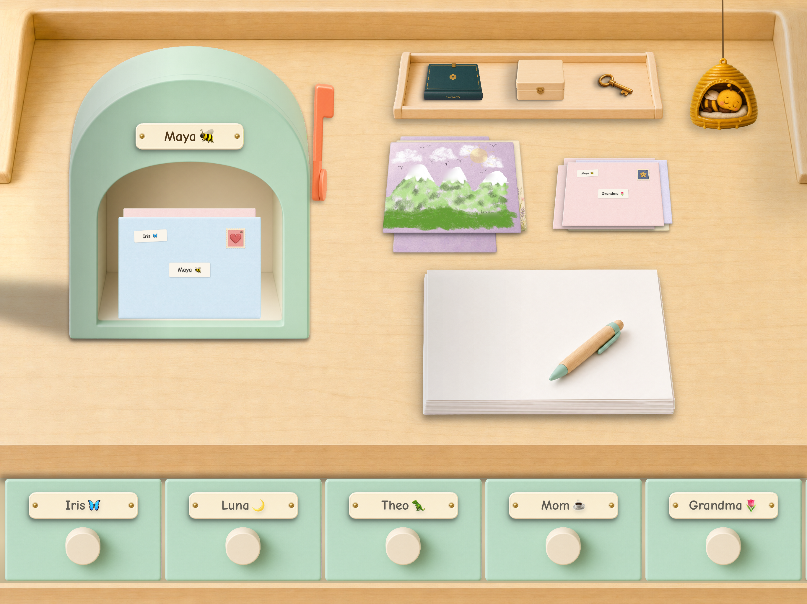

The page is theirs.
Draw, write, add stickers—or use a typewriter you can enable. Every letter is theirs.


Write and draw letters to friends you approve. A space of their own, while texting can wait.


A different way forward
Texting. Phones. Social media. It can all feel closer than you’re ready for.
Postmello offers another beginning: writing and drawing letters, with time between replies. Kids can keep up with friends while you take the bigger steps at your family’s pace.
Step inside their desk ↓Their very own place
Pick the paper. Write or draw. Add a sticker, an envelope, and a stamp. Then let the bee take it from here.

The Starter Collection is included. Other collections are optional purchases.
Draw, write, add stickers—or use a typewriter you can enable. Every letter is theirs.
An envelope, a stamp, an approved friend. The little courier bee takes it from there.
Every friend has a drawer. Every letter is there to open again.
Real letters


Inside the Fairy Glen collection
Papers, envelopes, stamps, and stickers.
One beautifully imagined world to make their own.


A few pieces from Fairy Glen. Collections are optional, permanent purchases.
 A little adventure, worth a whole letter.
A little adventure, worth a whole letter.Connection, at their pace
No typing indicators, read receipts, or online status. Just a mailbox flag when a letter arrives.
Write back now, tomorrow, or after the weekend. The friendship is still there.
Why we designed it this way ↗For the people they love
Grandma can write from her regular email inbox. Her words arrive as a letter on your child’s Postmello desk.
A traveling parent can write without taking the iPad along—even if they have a Postmello desk of their own. Only approved friends and family can write. Words arrive as a typewritten letter; links, photos, and attachments do not reach the desk.

How it began
My daughter wanted to stay in touch with her friends over the summer. I wasn’t ready for that to mean borrowing our phones to text—or moving toward a phone of her own. I built Postmello to give us another way to begin.
Their independence. Your boundaries.

Only approved friends can exchange letters. No public profiles or stranger discovery.
A PIN protects settings. Manage friends, report a letter, or block someone.
Kids can explore. Buying is for grown-ups, behind a PIN. No ads or in-app currency.
For children under 13, verified parental consent is required before their desk can send or receive letters.
Read about safety ↗Shaped with the families who wrote first
“She spent the last half hour writing notes and loved it. And she loves that a bee takes her mail away.”
“I love the whimsical spirit! It is so beautifully done! The entire space and the overall aesthetics are so charming and consistent around the slow, truly creative feel.”
A good place to start
Families support Postmello through optional desks and collections. No ads. No selling data.
Postmello Free
A real place to begin. No trial clock.
Postmello Membership
Founding rate · Regularly $29.99/year
A home for every writer. Start with one free desk. Membership adds room for more people and gives your household 50% off collections.
Need more room? Membership Plus includes up to 12 desks for $29.99/year at the founding rate (regularly $39.99/year). Prices shown in USD; local App Store pricing applies.
Collections
Matching desks, mailboxes, and stationery.
From $1.99 · Members save 50%
Separate purchases. No membership required.


A few things parents ask
There is no chat. Each letter is written, drawn, or typed, addressed to one person, and sent as a whole. No typing indicators, read receipts, or online status. There’s time between replies.
There’s no fixed age. Some people mostly draw; others write or type. Adults can have their own desks and exchange letters too. Postmello is for people who enjoy making and receiving letters.
No phone needed. Postmello runs on iPad with iPadOS 18 or later. Draw with a finger or Apple Pencil; a grown-up can also enable the typewriter.
Letters are delivered digitally. Make a page, put it in an envelope, and send it through Postmello. Nothing is printed or sent through the postal service.
Yes. Once your email address is approved for the desk, you can exchange letters from your regular inbox—even if you also have a Postmello desk. A traveling parent can write without taking the iPad along. Words arrive as a typewritten letter; links, photos, and attachments do not reach the desk.
Yes. Membership supports multiple individual desks on one iPad. Each person has their own mailbox, stationery, and friend drawers. Siblings can write to each other’s desks too.
Letters can only travel between friends approved by a grown-up. There is no public search or discovery. You can remove or block a friend behind the parental PIN.
There are no ads and no selling personal data. Letters travel only between approved friends. Families support Postmello through optional memberships and collections.
Yes. Purchased collections stay yours, even if your membership ends. A desk can show up to eight collections at a time, and you can change which ones are on its shelf.
Your household returns to one free active desk, which you choose. Extra desks are paused, with their letters and drafts preserved. Purchased collections stay yours.

On iPad. Free to start.